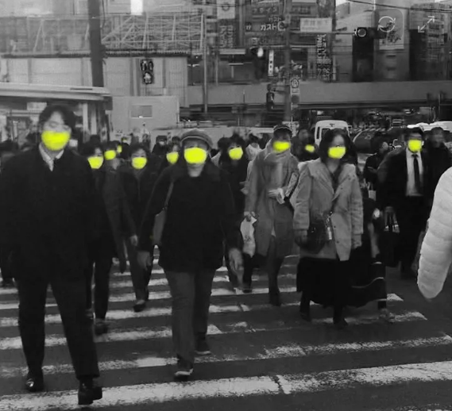

There is a common belief that a human life is priceless. That something you can’t buy or sell, no matter how much money you have, transcends all quantitative measures of money. However, when we look at the events in our world, doubt begins to question this ideal. Is saying a human life is priceless just a comforting sentiment or a proven fact? Daily reality seems to suggest the former constantly.
One could repeat over and over that a human life is priceless. But how can a proclamation that something is priceless be true when a price has been put on it time and time again? For fourteen-year-old Cyrus Carmack-Belton, the price of his life was four water bottles. The American justice system further affirmed this notion when the loss of Cyrus‘ life did not result in the loss of Rick Chow’s when he escaped imprisonment or execution entirely. Rick Chow avoided a criminal conviction for the murder; he took a life and paid nothing. At the same time, Cyrus had to pay for assumed theft (or racial fear) with his own life.

While there is an undeniable value to every human life, and justice that deserves to be served with it, the court letting Rick Chow off for the visceral shooting is the real-world application of a state devaluing a life. To a government, Human Life Value (HLV) is a financial amount, a quantitative concept in contrast to the qualitative ones in our daily lives. HLV is calculated based on how much value you bring, you could’ve brought, and “pain and suffering”. If you lose someone else due to the negligence of another, this price can be capped at as little as a few hundred thousand dollars in a court of law. Does this then create a difference in the worth of a human life when death is a possibility?
COVID provides more insight into how a human's life is valued when it comes to death, versus their livelihood. During COVID, human life was put below the financial needs of a government. The government used Value of a Statistical Life (VSL) calculations to justify this financially driven decision. Businesses and services were reopened due to the rapid decline in GDP. This, in turn, caused more people to venture outside of their homes despite the lockdown. Reopening these businesses caused another surge in COVID cases, but helped stabilize the GDP. More people died because the money was put before them.

During COVID, another major reason for the lockdown, aside from slowing the death rate, was to reduce the strain on medical professionals while they started developing a cure. During this time, a person’s well-being took precedence over economic difficulties. But when it came to deaths from COVID compared to the well-being of health professionals, the government decided that reopening businesses to stabilize the GDP came as a priority before both concerns.
This systemic devaluation of human lives is not limited to Western governance; on a global scale, this devaluation can take more predatory forms. The values and views of women in third-world countries have stark relevance when discussing the worth of a human life. Men will buy child brides and sell others into slavery for as little as a few hundred dollars. The moment we start trying to put any price on a human life, we start dehumanizing them. This raises another question: why do we, as humans, feel the need to assign a value to a human life? You can’t buy a new life, but you can put a price on it. It’s hard to believe that we will ever be able to assign a specific dollar amount to a human life. There is so much bias in that simple question alone.
Unless humans are one day able to determine the worth of a human life with fairness, equality, and transparency, it will be virtually impossible to ever find an unbiased answer to how much a life is worth.